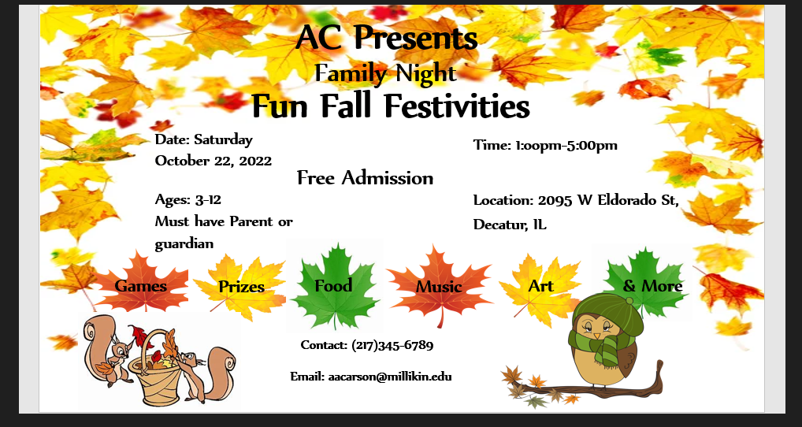
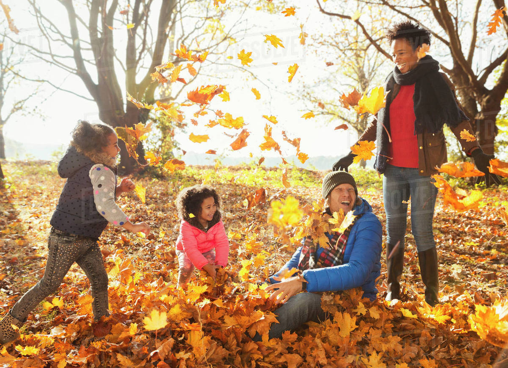

Welcome Welcome Welcome to 2022's Fun Fall Festivities
We're now in the month of October, and Autunm is here! Coming up this fall season, I AC will be hosting a Family night! There is much to offer;games, prizes, food and more! We hope you and Your family we be able to join US at Fairview Park in bringing in our fall season together! Please check flyer for other info on this event.

Here at this event, we want kids to enjoy going into the fall season. There's is so much going on right now especially with us being already half way through this fall semester. This event will help them focus on having fun and not worry about school for a night. We will be having performances by our local Millkin University band and a step show. There will be lots and lots of time to explore and plenty of food and prizes for everyone.
Here is a list of games that will be present at this event:
A Bit Corny
Candy Rattle
Card Ninja
Defying Gravity
Face The Cookie
Elephant March
Hut Hut Hoop
Apples Away
Seperation Anxiety
Movin on Up
Pumpkin Tennis
Split the Uprights
Stack Attack
This is a list of food and drinks that will be served this coming Saturday:
Every meat item below has a vegan alternative as well.
Chilli
Hot dogs
Hamburgers
Polish
Cheese Toasty
Tomato soup
Broccoli and Cheddar soup
Bread sticks
Pizza
Hot Chocolate
Tea
Water
Punch
Gatorade
Click link below to check out some Fun Fall Home activities to enjoy with your family! /Visit youtube.com